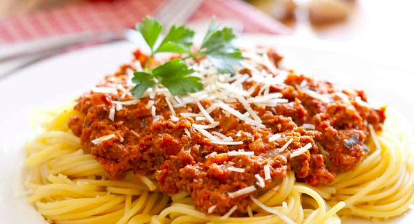

Noticias
Finalizó proceso de postulación a Becas de Estudio 2018
Mayo 24, 2018 by Admin
El objetivo de este proyecto es beneficiar a jóvenes recuperados de cáncer con becas académicas, para lograr la continuidad de estudios pendientes y obtener una profesión futura y reinserción en la sociedad.
Las becas podrán atender a los jóvenes con estudios universitarios, técnicos profesionales o de centros de formación técnica. Así también podrán tener alcances parciales y en ocasiones especiales, totales.
El año 2018 se otorgaron un total de 28 becas de las cuales 15 corresponden alumnos antiguos y 13 son para alumnos que inician sus estudios superiores este año 2018.
Para que estas becas sean bien utilizadas, sean objetivas y sean supervisadas, elaboramos requisitos básicos y similares a los utilizados en el resto de las instituciones que entregan estos beneficios.
VER INSTRUCTIVO DE POSTULACIÓN 2018 (formato PDF)

Tallarinata de amor y sonrisas - Una noche de sonrisas, amor y generosidad
Mayo 22, 2018 by Admin
Una noche de música, sorpresas y generosidad
Con gran éxito se desarrolló nuestra Tallarinata de Amor y Sonrisas el 30 de agosto en el Estadio del Banco Central.
La velada estuvo animada por nuestro amigo y permanente colaborador Checho Hirane, además de contar con la extraordinaria presentación de Andrea Tessa y otros artistas invitados.
Agradecemos a todos los asistentes que compartieron, donaron dinero y tiempo a esta noble causa, cuyo principal objetivo es entregar una vida más llevadera a los con cáncer atendidos a en los hospitales públicos de nuestro país.
Carta de agradecimiento a nuestros socios y colaboradores
Mayo 20, 2018 by Admin
Fundación Niño y Cáncer agradece sinceramente a empresas, socios, particulares, colegios y a cada uno de ustedes por su valiosa colaboración prestada durante el periodo 2016.
Para la tarea que nuestra Fundación realiza, el aporte que ustedes han realizado, significa la posibilidad de dar continuidad a nuestros proyectos en beneficios de los niños que son afectados de una enfermedad altamente impactante, como es el cáncer.
Sepan que las ayudas por ustedes proporcionadas se destinó al financiamiento de Becas de Estudios Superiores, Departamentos de Acogida, Mejoramiento de las instalaciones hospitalarias, actividades recreativas, entre otras actividades que la Fundación realiza permanentemente.